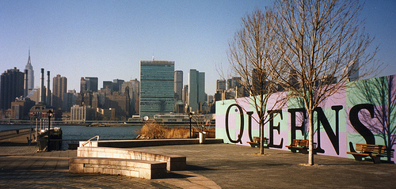
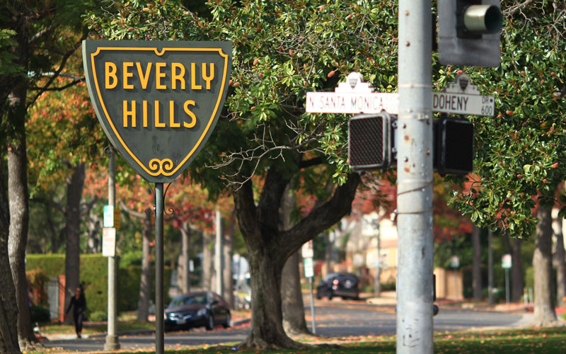
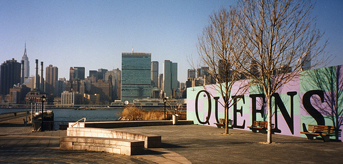
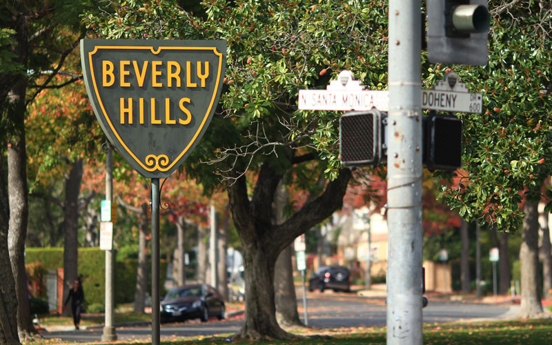

- Home
- Coding the Past - Humanities
- Industrial Revolution - History
- Industrial Revolution - Humanities
Coding the Past
World History
Phone Interview with Fred Ephraim, January 21, 2018; Interviewer: Rachel Andriacchi; Interviewee: Fred Ephraim; Date: January 21, 2018
Interview AudioRachel: My name is Rachel Andriacchi and I’m 16 years old. It is January 21, 2018. I am sitting in my kitchen at home on the phone with Fred.
Rachel: Can you say your name, your age, the date, and the location of the interview?
Fred: I am Fred Ephraim. The date is...what is today 1/20? 1/21. Give me the other questions.
Rachel: Your age?
Fred: My age? My age is over 30.
Rachel: And where you are right now.
Fred: I am at home in Beverly Hills. Yeah, I’m at home in Beverly Hills.
Rachel: So for the first question, when and where were you born?
Fred: Um, I was born in New York, I was born in Brooklyn, New York. I was born in the twentieth century.
Rachel: Where did you grow up?
Fred: I actually grew up in New York, in Brooklyn. And, well a short time in Brooklyn, and then in Queens, and Manhattan, so all New York City.
Rachel: What was your childhood like?
Fred: What was it like? Well that’s a broad question.
Rachel: Like what did you do when you were a kid?
Fred: What I played? I ran track, I played basketball, I played baseball. I was studious, so I went to the library a lot, I read a lot of books.
Rachel: Would you say it was good? Did you enjoy your childhood?
Fred: Oh! Parts of it. I think it was… it was even. There were times that I enjoyed it, sure, and there were times that I loathed it. Um, but I think, if I were going to say on balance it was pretty… pretty normal.
Rachel: What is your ethnic background?
Fred: My ethnic background, well, some would call me Black, some would call me African American. Um, so I would say that would be the ethnicity question answered.
Rachel: Where is your Mom’s family from, and your Dad’s family?
Fred: Oh this is going to be interesting…..My Mom’s family is actually... they are from South Carolina. They are the Black Jewish side of my family. And my father’s family… his people are from Alabama. Because that’s where my mother met him, she actually moved to Montgomery, Alabama, and that’s where she met my Dad.
Rachel: Have you ever been there? And like what was it like there?
Fred: I have never been to either place.
Rachel: What are the most important lessons you’ve learned in life, and where did these events happen?
Fred: Where did these lessons happen? Well it’s an interesting thing. No, let me see if I can answer your question right, before I answer it. What was my best lesson and where did this lesson happen?
Rachel: Yeah, like, what’s an important lesson you learned in life and when and where and how did it happen?
Fred: OK. OK. That’s what I thought you said. OK, so the one I pick a lot as a important lesson is...I learned it in high school and it was taught to me by my basketball coach. And I’ll give you a little anecdote: I was a star basketball player and during a game I made a pass to my center. He was this huge guy. And it was a crucial point in the game and he dropped the pass and it went out of bounds. We did win the game, but after the game I was still upset. I was a child. I was still upset and I went to my coach and I said “Look, I gave him this fabulous pass,” and I described it, “I came down the court, I dribbled between my legs, took it behind my back, and I threw it, with my left hand between two guys and it hit my center in the hand, he dropped it and it went out of bounds.” And so my coach said to me (after I had touted my athletic specialty and prowess) he said to me, “Son, you need to give the player the pass that he can handle.” It took me a while to get it. But it’s a story that was so significant in my life in terms of dealing with people, in situations where you have expectations from them. It is about not necessarily what you intend, but it’s so much what they can handle and what they can receive and use from you. It doesn’t matter how good you think it is, or how right you think it is, if they can’t hear you and they can’t handle, then it’s not worth anything. So that was the lesson that I remember most amongst all the lessons that I have learned.
Rachel: That’s cool. How has your life been different from what you imagined?
Fred: (laughs) Truthfully when I was a kid….I don’t remember imagining ending up in any particular place. I was the kind of kid that kept his head down and just did what was in front of him, and what happened happened as a result of the work that I put in and not because of what I expected to happen. And because of that I just kind of deal with what’s in front of me, as opposed to projecting what will happen.
Rachel: What is a moment in history that you personally remember?
Fred: Hmmm. Well, there are a lot of things that happened. The moment in history that I personally remember….OK, so I’ll take the most recent one. That was the election of Barack Obama.
Rachel: What about it?
Fred: It was a moment that I thought from living in this country that would never happen. Not just in my lifetime, it just would never happen because I thought that this country was too biased, bigoted, and racist to elect a black man to the highest office in the land.
Rachel: Who was the person that influenced you most in your life and why?
Fred: My Mom. Because she showed me tolerance and love, and she taught me that I was capable of accomplishing anything that I wanted to.
Rachel: And the last question is, have you ever lived anywhere besides California and New York? And if so, which was your favorite and why?
Fred: OK. So I’ve lived in several cities in Italy, I’ve lived in Paris, in Spain. I’ve lived in Amsterdam. I’ve lived in Florida, I’ve lived in Chicago. And which was my favorite place?
Rachel: Yeah.
Fred: Paris.
Rachel: How come?
Fred: It’s a….Paris is one of the most cosmopolitan cities in the world, and it is …. for me it is the most...um...let me see what word I want to use for it...I think it’s like one of the most culturally diverse and forward-thinking cities that I’ve ever lived and spent any time in. Yeah. That would be it. And so, why do I say that? I’ll say that, Rachel, because it’s very simple, um, I see the world differently than a lot of people see it because I am always a stranger because I’m a black man and there are very few places that accept me as an equal. And I’m always having to deal with the fact that they don’t. And Paris is one of the places where I found the least amount of adversity and the challenge to that. They accepted me for who I was and what I brought to the table.
Rachel: Uh, that’s it. Thank you so much.
Fred: That’s it? You’re so welcome so much. Take care.
Rachel: Goodbye!
Fred: Bye.
 


